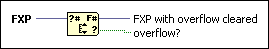

Clear Fixed-Point Overflow Status Function
Owning Palette: Fixed-Point Functions
Requires: Base Development System
Clears the overflow status of FXP by changing the overflow status of FXP to FALSE.

 Add to the block diagram Add to the block diagram |
 Find on the palette Find on the palette |